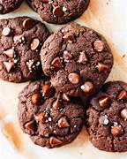
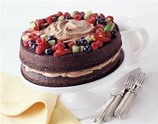

We have delicious Cakes & Cookies in our Oven

Cookies
cookies, can be at room temperature before baking; the spoonfuls of dough will spread and flatten out to the desired result. Room temperature butter is best for creaming together butter and sugar. Chilled butter is best for cutting butter into flour.

Cakes
cakes that are decorated with a specially made edible image. This enables an edible decoration or image to be applied to the top of the cake with the same clarity as a magazine print! The photo cake image is designed on a computer and printed directly onto the edible page using approved edible inks